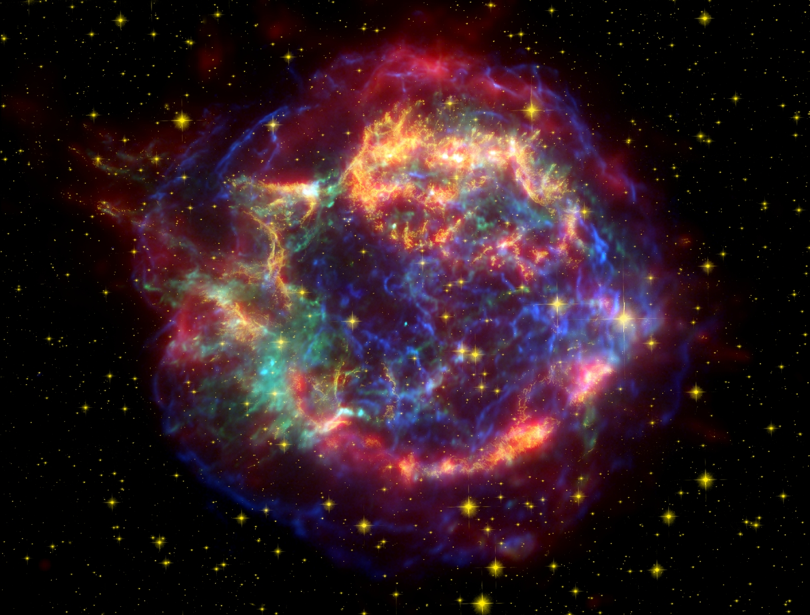
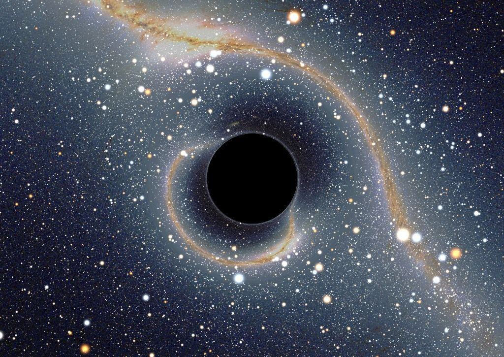

We won't go into details, my only goal is to help you understand what the little lights you see in the sky at night are.
Star formation is due to the collapse of a gas cloud and its possible fragmentation into several protostars, which heat up as they contract. A gas cloud, composed of gas and dust, is the medium from which solar systems are born, and is mainly composed of hydrogen and helium, of which a star is essentially composed. The temperature then reaches such a value that the core "ignites": the hydrogen fuses into helium, providing the energy that stops the collapse. The star then enters the main sequence in which it spends most of its life.
A star is therefore a sphere of plasma, this shape of sphere is due to gravity, they are therefore essentially composed of hydrogen and helium, a gaseous celestial body, in rotation on itself. But yes, obviously, a star does not walk around like a planet around the Sun for example, they stay nicely in their place. Why do they do this?
Let's take the Sun as an example, the Sun as everyone knows, I presume, is a star, we on Earth and the other planets revolve around it while it revolves around itself quietly. But in fact, in spite of what we can believe, the stars and the Sun also move, but we do not see it, the distance between the stars and us is so important, that we could believe, as a simple beginner observer, that the stars do not move but rather that it is us in relation to the rotation of the Earth on itself and around the Sun that makes the stars move, It's true, as the Earth moves, so do the stars and everything else in the sky, except the North Star, which is in the axis of rotation of the Earth, which gives us the impression that the stars rotate around it.
But a star moves by itself as well. For the sun, because we ourselves revolve around it, it is impossible for us to see it moving, more precisely, the whole solar system moves with the sun around the galactic centre, including everything in our Galaxy.
As shown in the image above, our solar system revolves around the centre of the Milky Way, so the few stars visible to us also revolve around this centre, the Galactic Centre.
But where does the light from a star come from? The light it emits and which reaches us is due to nuclear fusion reactions in its core. The light emitted by a star has a long way to go to reach us, the further away a star is, the longer it takes for its light to reach us, it is even possible that on earth we still see the light of some stars, even though they are "dead".
Yes, a star evolves, grows, and then dies...
The more massive a star is, the faster it consumes its hydrogen, e.g. the sun, a star like the sun has a lifetime of about 10 billion years, so a large star will be very bright, but will have a short lifetime. When nuclear fuel, usually hydrogen, becomes too scarce in the star's core, fusion reactions stop. The pressure created by these reactions no longer compensates for the gravitational forces and the star collapses in on itself. It is at this moment that an explosion is formed, which is called a supernova or hypernova, depending on the mass of the star. Also planetary nebula, it all depends on the type of star.
| Name of the type | Image |
|---|---|
|  | Supernova |
|  | Trou Noir |
Here is to go to the main page